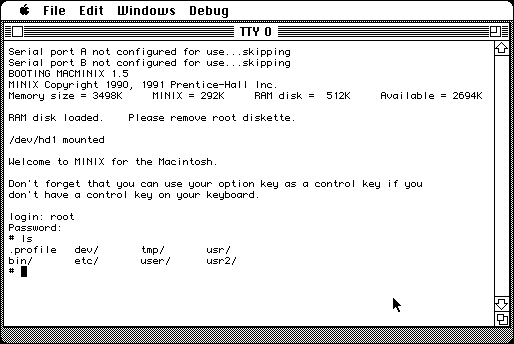

Download (external link)
MacMinix_1.5.10.7.sea.hqx (5.4M) MacMinix 1.5.10.7
copyright: Prentice-Hall Inc., Archetype Publishing, Inc.
mod date: Feb 3, 1992
license: BSD
from url :
www:download:previousversions [Wiki]
Port of Minix, a simple unix like operating system for teaching. “Tested most extensively with system software version 6.0 or later.” More info at https://www.pliner.com/macminix/.

Here is the md5 checksum for the download, signed with Gryphel Key 5:
--------- GRY SIGNED TEXT --------- 4296a248312bfd6f7c90bd7b5301efe5 MacMinix_1.5.10.7.sea.hqx ------- BEGIN GRY SIGNATURE ------- Gry/4Xa8CFcUzxdN/E0iFNlcCNN1rUkAuIyitlcXTfGuLmqBjsB5jgBsRPWTTv8d DJKSyAMdjKqxd3zbuiXXSVlblusCrv+J2q/Z/c5/WLtbzazThg/yc8f0p37xt48N woGo0VmS4d7pfjRedpHJRLFXKqSWBkdSFgeLAz57FivUb2t6IM+7PH3vP+9jgucC -------- END GRY SIGNATURE --------